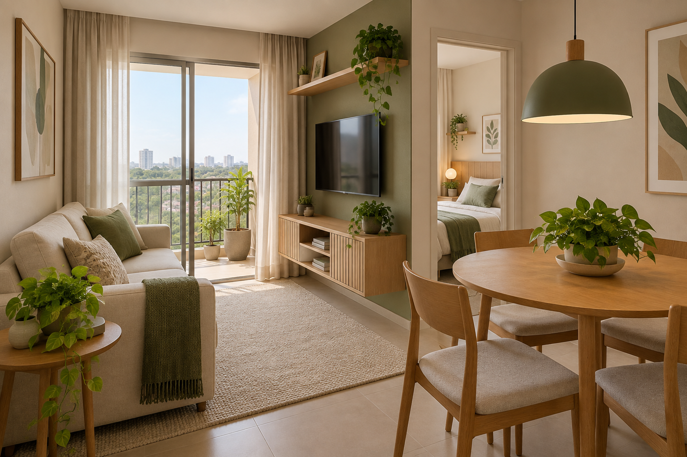
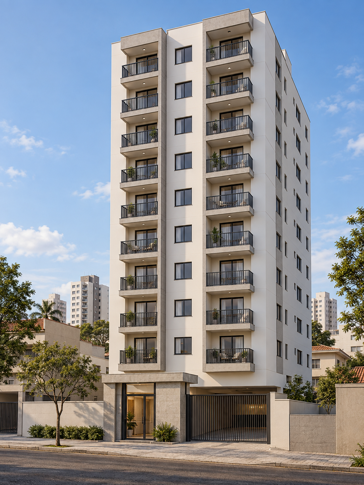

RESIDENCIAL AURORA · SÃO PAULO
Um novo começo.
Do seu jeito.
Dois dormitórios, espaços bem aproveitados e a praticidade de um condomínio essencial.
40 apartamentos · de R$ 200 mil a R$ 500 mil

ESPELHO DE VENDAS
Seu próximo endereço,
em perspectiva.
10 andares · 40 apartamentos
43 e 47 m² · 2 dormitórios
TORRE ÚNICA
Explore o Aurora
Clique no apartamento para selecioná-lo · arraste para girar
Acesos: disponíveis · apagados: reservados ou vendidos

DISPONIBILIDADE
Escolha uma unidade
Frente02
Frente03
Fundos04
Fundos
Um condomínio essencial.
Térreo com portaria e acesso à garagem. Dez pavimentos residenciais com quatro unidades por andar. Finais 01 e 02 voltados para a frente; 03 e 04 para os fundos. Vagas não atribuídas neste estudo.
Preços para experimentar.
Preços fictícios de R$ 200 mil a R$ 500 mil para variar as simulações. Fundos: R$ 200 mil no 1º andar, com acréscimo de R$ 30 mil por andar. Frente com sacada: R$ 30 mil a mais que os fundos do mesmo andar. Não representam avaliação de mercado.